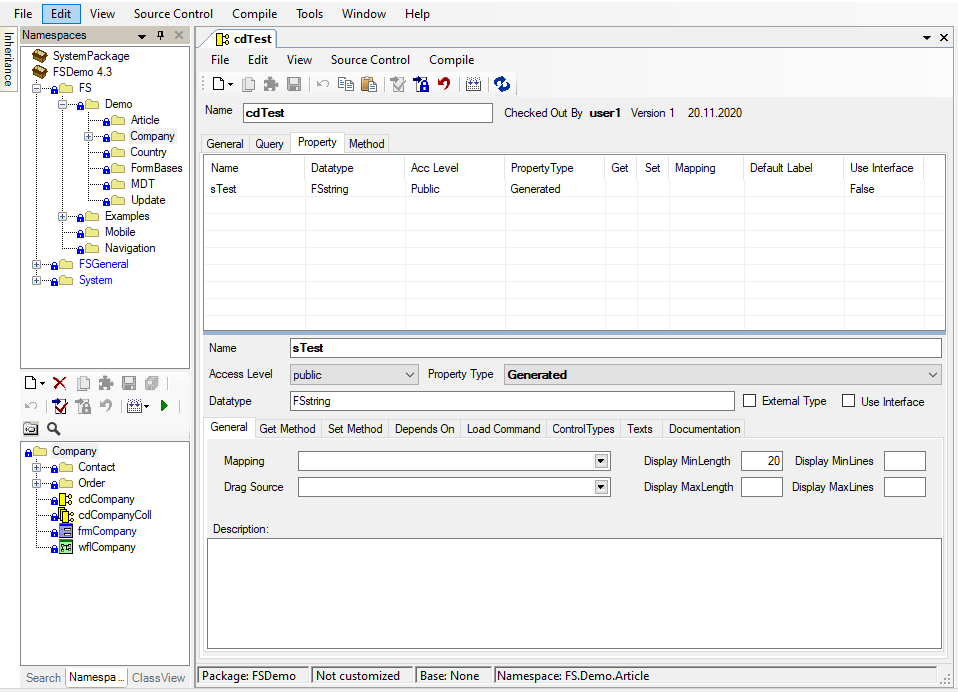

Registerkarte Properties

Neue Properties anlegen
Die Properties werden in der Class-Registerkarte angezeigt. Hier können neue Properties angelegt werden. Das können Sie über den Button (New) mit dem Eintrag Property bzw. Membervariable oder über das Kontext-Menü der Component (New / Property bzw. New / Membervariable) machen. Eine dritte Möglichkeit besteht darin, eine Component direkt per Drag & Drop aus dem Namespace Treeview auf die Property Tabelle zu ziehen.
Drag&Drop von Components

Das Property wird angelegt und zugleich im Component-Fenster angezeigt.
Properties löschen
Properties werden ebenfalls über die Registerkarte Class gelöscht. Wählen Sie das zu löschende Property aus und anschließend aus dem Kontext-Menü den Eintrag Delete.
Properties kopieren
Sie können ein Property in eine andere Komponente, in ein anderes Form kopieren oder innerhalb der Komponente duplizieren. Dazu wählen Sie das gewünschte Property in der Property-Liste aus. Anschließend verwenden Sie entweder die Standardtastenkürzel Strg+C, Strg+V und Strg+X oder das Kontextmenü, um den gewünschten Kopiervorgang durchzuführen.
Properties bearbeiten
Sie können ein Property öffnen, indem Sie einen Doppelklick auf den Eintrag in der Class-Registerkarte machen. Alternativ können Sie auch im Component-Fenster auf der Registerkarte Property in der Tabelle das gewünschte Property auswählen.
Die Properties werden in der Tabelle sortiert, wenn Sie auf die Spaltenüberschrift des gewünschten Sortierkriteriums anklicken.
Name
Bezeichnung des Properties. Über diesen Namen wird das Property im Code angesprochen.
Access Level
Legen Sie hier das Access-Level des Properties fest. Die Angabe ist analog zum .NET-Standard.
Datatype
Siehe Datentyp bearbeiten
UseInterface
Es besteht die Möglichkeit, ein Property, welches als Datatype eine Component eingestellt hat, als Interface einzubinden, um zirkulare Referenzen zu umgehen.
Wenn man an einer Component ein Property anlegt und dabei als Typ eine Component aus einem anderen Namespace verwendet, dann wird bei diesem Property automatisch die Eigenschaft UseInterface gesetzt.
Property Type
Folgende Typen stehen zur Auswahl:
• Membervariable • Generated • Generated (readonly) • Individual • Individual (readonly) • und Relation.
Diese Typen werden weiter unten genauer beschrieben.
Mapping
Diese Spalte gibt das Mapping (die Verbindung) des Properties zur Query an. In der Combobox stehen hier alle Spalten (Alias) der Query zur Auswahl.
Registerkarte Description
Hier kann eine Beschreibung zum Property angegeben werden.
Registerkarten Get Method / Set Method
Siehe Individual / Individual (readonly) Properties
Registerkarten Depends On / LoadCommand
Siehe Relation Properties
Registerkarte Default Label
Hier suchen Sie die Bezeichnung des Felds im Form aus. Sie können wählen, ob Sie die Bezeichnung aus der Database-Table bzw. dem Metadatentypen oder eine eigene Bezeichnung nehmen möchten. Die Bezeichnungen sind hierarchisch aufgebaut und können in den aufeinander aufbauenden Ebenen überschrieben werden.
Metadatatype-Labels können durch die Database-Labels überschrieben werden, Database-Labels durch die Component-Labels, Component-Labels durch die Form-Labels. Ist in einer tieferen Ebene ein Label vergeben worden, wird dieses angezeigt.
Registerkarte Control Types
Sie haben die Möglichkeit, ein Standard-Control zu definieren bzw. ein zusätzliches Control hinzuzufügen. Soll es ein Editfield, eine Combobox etc. sein?
Datentyp bearbeiten
Die Eingabe des Datentyps erfolgt über ein Textfeld mit Auto-Vervollständigung. Beim Anlegen neuer Properties wird der zuletzt ausgewählte Datentyp vorbelegt.
Diese Angabe kann nicht geändert werden, wenn dieses Property ein Mapping hat. Dann wird der Metadatentyp aus der entsprechenden Database-Column gezogen.
:::image type="content" source="media/registerkarte-properties-datentyp.png" alt-text="datatype":::
Tippen Sie einfach den Namen des gewünschten Datentyps ein. Elemente, die mit dem eingegebenen Text beginnen, werden in der Auto-Vervollständigungsliste angezeigt und können über die Pfeiltasten oder per Maus ausgewählt werden.
Wenn Sie den Namen eines Namespaces angeben und anschließend einen Punkt eingeben, wird die Auswahl der Vorschläge auf diesen Namespace eingeschränkt. Beispiel: „Sales.cd“ liefert alle Elemente aus dem Sales Namespace, die mit cd beginnen.
Durch Verwendung des Platzhalters „%“ können Sie angeben, dass die Ergebnisse nicht mit dem danach folgenden Text anfangen müssen, sondern der Text lediglich enthalten sein muss. Beispiel: „sales.%ordertype“ liefert alle Elemente aus dem Sales Namespace, deren Name ordertype enthält, also z.B. cdOrderType.
Wird die TextBox verlassen, wird der Name des ausgewählten Elements durch den vollständig referenzierenden Namen ersetzt.
Warning
Beim ersten Verwenden der Textbox kann es einige Sekunden dauern, bis der interne Speicher mit allen Elementen gefüllt ist.
Es werden maximal 100 Vorschläge angeboten.
Externe Typen

Properties von Components und Data Contracts sowie Membervariablen von Forms können externe Datentypen zugewiesen werden. Wird die CheckBox „External Type“ gesetzt, wird die Autovervollständigung des Datatype-Textfeldes deaktiviert und ein beliebiger Typ kann angegeben werden (im Beispiel List<List<int>> ).
Dies bietet sich z.B. an, wenn in einem Namespace mit externen Assemblies gearbeitet wird, deren Klassen als Datentypen von Properties verwendet werden sollen.
Im IntelliSense wird beim Aufruf eines solchen Properties „object“ angezeigt, da im Hintergrund mit „object“ gearbeitet wird. Das Property „lstTest“ aus dem Beispiel kann aber z.B. trotzdem so verwendet werden:
int i = this.lstTest[0][1]; // Der Wert von i ist danach 2
Membervariablen
Bei diesem Typ wird kein Property, sondern eine Membervariable erzeugt. Membervariablen haben keine get- und keine set-Methode.
Sie sollten nur mit dem Access-Level private versehen werden, um eine externe Manipulation zu unterbinden, da keinerlei Sicherungsmöglichkeiten nach außen definiert werden können.
Eine Membervariable wird nicht im Form-Designer angeboten. Sie sollte nur zum Merken von Informationen innerhalb der Komponente verwendet werden.
Generated / Generated (readonly) Properties
Die get- und set-Methode für das Property wird automatisch generiert, kann aber auch überdefiniert werden. Dazu muss die Checkbox Write Individual auf der Registerkarte Get Method bzw. Set Method gesetzt werden. In Getter und Setter kann mit der Hintergrundvariable this.PropertyNameValue gearbeitet werden. In Customizations sollte mit base.PropertyName gearbeitet werden, damit Getter und Setter aus dem Basis-Package nicht ausgehebelt werden.
In der Component wird auch der Original-Wert des Properties gespeichert. Wird dem Property ein Wert zugewiesen, der vom Original-Wert abweicht, wird der Status der Component auf Changed gesetzt.
Der Original-Wert kann mit PropertynameOrgValue abgefragt werden.
this.prop = „abc“;
if (this.prop != this.propOrgValue )
{ /*Wert hat sich geändert*/ }
Ist Generated (readonly) ausgewählt, steht für das Property nur die get-Methode zur Verfügung. Auf das Property kann somit nur lesend zugegriffen werden. Bei einer Wertzuweisung an das Property liefert der Compiler eine Fehlermeldung.
Hat das Property ein Mapping, verwalten die generierten get- und set-Methoden das Resultset der Query.
Ohne Mapping wird eine versteckte private Variable verwaltet.
Properties mit einem Mapping können nur auf Generated oder Generated (readonly) stehen. Ist in der Query die Spalte ’Readonly’ gecheckt, ist sogar nur Generated (readonly) möglich.
Individual / Individual (readonly) Properties
Bei diesen Typen können/müssen Sie die get- und die set-Methode manuell ausprogrammieren. Es werden in den Registerkarten Get Property und Set Property die entsprechenden Code-Felder aktiv. Der Aufruf des Setters führt nicht dazu, dass der Status der Component geändert wird.
Bei Individual (readonly) wird nur das Code-Feld für die get-Methode aktiv.
Warning
Achten Sie darauf, dass eine Get-Methode immer einen Rückgabewert vom Typ des Properties besitzen muss.
Folgende 3 Anwendungsfälle sind denkbar (Beispiel):
1.Fall:
Sie haben z.B. einen Generated Property Status, und wollen in einem weiteren Property den Text zum Status ausgeben. Dann empfiehlt sich ein Individual (readonly) Property.
Die get-Methode könnte folgendermaßen aussehen:
if (this.Status == 1) return „offen“;
else if (this.Status == 2) return “erledigt”;
else return “”;
2. Fall:
Sie haben ein Generated Property vom Typ string, wollen aber ein int Property haben, mit dem Sie im Code arbeiten. Mit einem Individual Property können Sie dieses entsprechend verpacken:
Generated Property sType vom Typ string (z.B. mit einer Column aus der Query verbunden).
Individual Property intType vom Typ int:
get-Methode:
return Convert.ToInt32( this.sType );
set-Methode:
this.sType = Convert.ToString( value );
3. Fall:
Sie wollen ein Property anbieten, das nur bei Bedarf instanziiert und gefüllt wird. Dazu müssen Sie zum einen ein Individual (readonly) Property (z.B. oComp) anlegen und zum zweiten eine private Membervariable (z.B. oCompMember), die den nachgelesen Wert merkt, damit das Einlesen nur einmal erfolgt (Property und Membervariable müssen denselben Typ haben).
get-Methode:
if (this.oCompMember == null)
{
this.oCompMember = new cComp( this.Global );
oCompMember.Load ( );
}
return oCompMember
Relation Properties
Die Relations dienen dazu, Ihre Komponenten miteinander zu verbinden. Wenn Sie z.B. einen Auftrag und einen Kunden haben, ist es in der Regel so, dass der Auftrag eine Kundennummer hat, die angibt, welcher Kunde den Auftrag erteilt hat.
Relations stellen eine Möglichkeit dar, diese beiden Komponenten miteinander zu verbinden. Dazu wird im Auftrag ein Property Kunde angelegt. Dieses Property muss dem Typ Relation entsprechen. Anschließend müssen noch Angaben darüber gemacht werden, wie die beiden Komponenten miteinander verbunden sind.
Warning
Achten Sie darauf, dass als Datatype eine Component ausgewählt ist, da Sie andernfalls Relation nicht als Property Type auswählen können.
Registerkarten Get Method und Set Method
Analog zu Generated Properties Generated / Generated (readonly) Properties Properties:) kann bei Bedarf zusätzlich individueller Code, der beim Setzen und Auslesen des Properties durchlaufen werden soll, programmiert werden.
Registerkarte Depends On
Auf dieser Registerkarte können Sie angeben, welches Property aus dem Auftrag mit welchem Property aus dem Kunden verbunden werden soll. Sie geben also eine Schlüsselbeziehung an, ähnlich wie Sie das auf einer relationalen Datenbank tun würden. Sie können auch mehrere Properties miteinander verknüpfen, wenn sich der Schlüssel aus mehreren Properties zusammensetzt.
Button Add
Fügt ein weiteres Property in die Relation ein. In der Tabelle wird eine neue Zeile angelegt und Sie definieren, welches Property mit welchem wie verknüpft werden soll.
Button Remove
Löscht die markierte Zeile aus der Relation.
Spalte Depends on Property
Hier wird das Property auf der Seite Component, in der Sie sich gerade befinden, angegeben. Im Beispiel wäre das ein Property des Auftrags, z.B. die „Kundennnr“.
Spalte Compare Operator
Gibt an, mit welchem Operator die Properties verknüpft werden sollen.
Spalte oXXX.Property
Gibt an, mit welchem Property der eingebundenen Component das eigene Property verknüpft werden soll. Im Beispiel wäre das evtl. „Kunde.Kundennr“.
Spalte Generated Load Condition
Zeigt die aus den anderen Spalten entstandene Suchbedingung an.
Registerkarte Load Command
Mit den Angaben auf der Registerkarte Depends On wird Code generiert, der für das Nachlesen der Daten (hier der Kundendaten) zuständig ist. Diesen Code können Sie überschreiben, wenn Sie eine eigene Logik wünschen.
Sind alle Angaben gemacht, wird die Relation erst beim ersten Zugriff nachgelesen. Dabei werden die gemachten Angaben berücksichtigt. Ändern sich die Inhalte der verbundenen Properties, wird erneut ein Load ausgeführt.
Warning
Derzeit können nur 1:1 Relationen abgebildet werden. D.h. es ist nicht möglich eine Collection als Relation einzubinden.